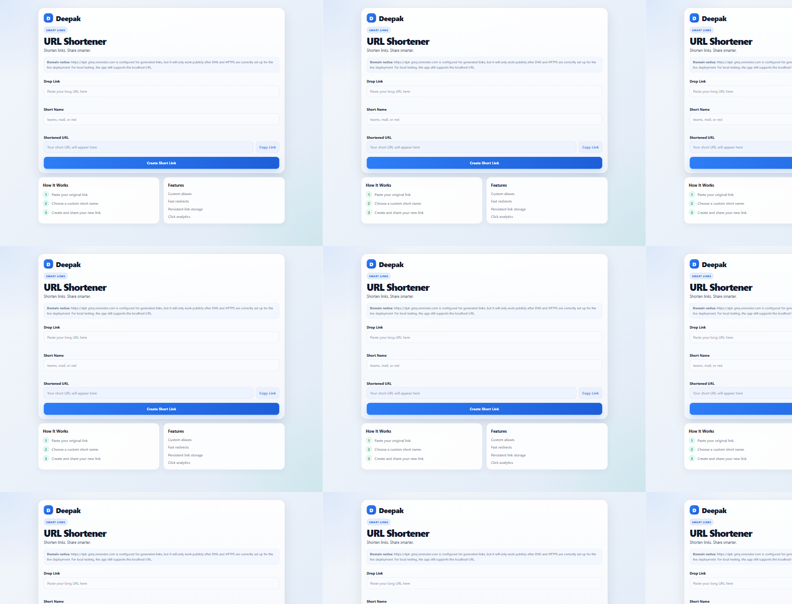
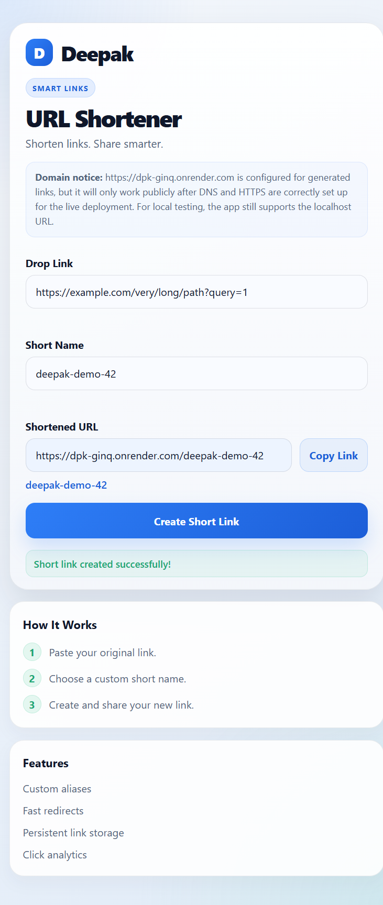
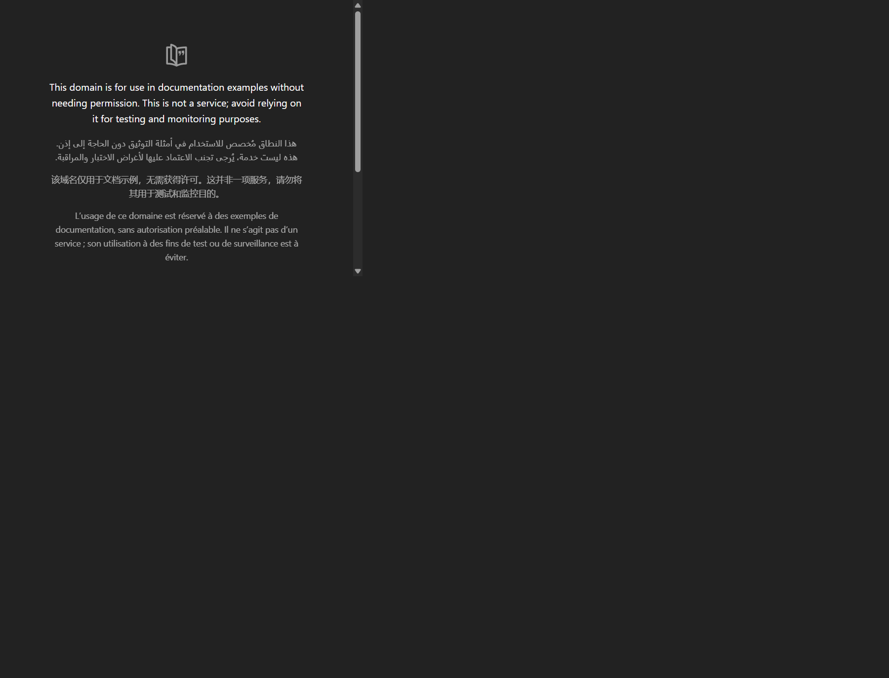

1. Executive Summary
The URL Shortener is a lightweight web application designed to convert long destination URLs into short, human-friendly codes and redirect users accurately to their original destinations. The application combines a browser-based frontend, a Python FastAPI backend, and an SQLite database to provide link creation, redirect handling, and analytics tracking.
The implemented feature set includes URL validation, custom alias support, redirect resolution, click counting, link deactivation, analytics retrieval, and admin-protected management endpoints. The repository and test suite confirm that the project is operational as a local application and that the live deployment is reachable on Render.
Primary capabilities
- Create short links
- Use custom aliases
- Resolve short URLs
- Track click counts
- Deactive links without deleting records
Operational model
- FastAPI application
- SQLite persistence
- Browser UI and REST API
- GitHub source control
- Render hosting
Deployment status
- Repository exists on GitHub
- Live web app is available
- API docs are exposed
- Prototype persistence is SQLite-based



2. Requirements and Solution Overview
The original functional requirement was to provide a simple and reliable way to shorten a destination URL, preserve a usable short alias, and redirect a visitor to the original location. In practice, the project also needed validation, usability, analytics, and administrative controls to make the service operational and testable.
The current solution addresses those needs with a FastAPI application that accepts an input URL, normalizes it, validates the scheme and hostname, stores the record in SQLite, and returns a generated short URL. When a short code is requested, the backend checks the active record, returns an HTTP redirect, and increments the click count.
Additional capability for management and analytics is present in the admin endpoints and in the click tracking logic. The design remains intentionally lightweight and suitable for a prototype or learning deployment while preserving a clean separation between frontend, backend, and data layer.
3. System Architecture
Component interaction
- The browser UI sends requests to the FastAPI application for URL creation and management.
- The backend validates the URL, alias, and admin credentials before mutating data.
- SQLite stores the canonical link record, click metadata, and access events.
- Redirect requests resolve the code and return an HTTP redirect response to the original URL.
- Admin endpoints return link summaries and analytics while enforcing authentication.
4. Technology Stack
| Technology | Role | Reason for use |
|---|---|---|
| Python | Application runtime and business logic | Suitable for the FastAPI service and URL processing logic |
| FastAPI | Web API and request handling | Enables high-quality API development with request validation and routing |
| SQLite | Persistent storage for links and analytics | Lightweight and simple for a local or prototype deployment |
| HTML, CSS, JavaScript | Frontend UI | Allows browser-based interaction without additional framework complexity |
| Jinja2 | Template rendering | Used for the frontend page served by FastAPI |
| Pytest | Automated validation | Used to verify behavior across link creation, redirects, and admin flows |
| GitHub | Source control and code hosting | Used to manage the codebase and connect to Render |
| Render | Hosted deployment | Provides the live web service and build/start workflow |
5. Detailed Application Workflow
- The user enters a destination URL in the browser frontend.
- The backend validates the request and ensures that the URL is an allowed HTTP or HTTPS destination.
- A short code is generated, or a custom alias is accepted if supplied and valid.
- The record is inserted into SQLite with metadata such as the original URL, created timestamp, updated timestamp, click count, and active status.
- The API returns a short URL that includes the generated code.
- A visitor opens the short URL, which is processed by the redirect endpoint.
- The backend resolves the short code and verifies that the link is active.
- The response is an HTTP redirect to the original destination URL.
- The click counter and access event are updated to record analytics.
- Admin users can list, inspect, update, or disable records through authenticated endpoints.
6. API Design
| Method | Route | Purpose | Key behavior |
|---|---|---|---|
| GET | / | Frontend page | Serves the application UI from the Jinja template |
| POST | /api/v1/links | Create short link | Validates URL and alias; returns created short URL and metadata |
| GET | /api/v1/links | Admin listing | Requires X-Admin-Key; returns link list and totals |
| GET | /api/v1/links/{short_code} | Admin detail | Returns full metadata for a short code |
| PATCH | /api/v1/links/{short_code} | Update destination | Changes the original URL while keeping the code unchanged |
| DELETE | /api/v1/links/{short_code} | Disable link | Disables redirects while retaining the record |
| GET | /{short_code} | Redirect resolver | Returns HTTP 307 redirect for active links |
| GET | /api/v1/links/{short_code}/analytics | Analytics | Returns metadata and click count for the link |
Validation and status behavior
- URLs must use HTTP or HTTPS schemes and include a valid hostname.
- Custom aliases are limited to letters, numbers, hyphen, and underscore.
- Duplicate custom aliases are rejected with a conflict response.
- Admin routes require a matching X-Admin-Key header and configured ADMIN_API_KEY.
- Requests with invalid URLs are rejected by validation with HTTP 422.
POST /api/v1/links
Content-Type: application/json
{
"original_url": "https://example.com/very/long/path?query=1",
"custom_alias": "demo-link"
}
Response: 201 Created7. Database Design
The application uses SQLite and creates the following primary tables:
| Table | Purpose | Key schema details |
|---|---|---|
| links | Stores each shortened link | id, short_code (UNIQUE), original_url, created_at, updated_at, click_count, is_active |
| link_events | Stores access events | id, short_code, accessed_at |
The design supports:
- one short code per link record
- link retention after deactivation
- click tracking through click_count and event insertion
- admin reporting without deleting archived records
8. AI-Assisted Development Process
GitHub Copilot was used as a development assistant within VS Code to support implementation, debugging, validation, and documentation tasks. The project repository and active codebase provide the evidence base for the accepted implementation. The engineering workflow was not autonomous; every AI-assisted output was reviewed, validated, and accepted by the engineer before it was treated as final.
Engineer-led task decomposition
The requirement was decomposed into concrete engineering tasks that reflected the actual implementation in the repository:
- define the core user flow for creating, storing, and resolving a short URL
- design the route and schema structure for API behavior
- implement persistence in SQLite with link and analytics metadata
- add validation for URLs, aliases, and admin-authenticated actions
- create automated tests to validate functionality and edge cases
- document setup, deployment, and operational limitations
This sequencing reflects a disciplined engineering approach: AI functions as an accelerator within each task, while the engineer determines scope, quality criteria, and final acceptance.
Human ownership and review discipline
The assignment emphasizes that AI should assist execution, not replace engineering judgment. In this project, that principle was applied directly:
- AI-assisted code was reviewed against the repository structure and architecture
- API and database behavior were checked against the implemented endpoints and SQLite schema
- tests were executed to confirm behavior instead of relying on generated output alone
- documentation and deployment notes were aligned with the actual repository and live configuration
The final engineering ownership remained with the developer: AI accelerated the process, but the human engineer was accountable for correctness, validation, and final output quality.
9. Engineering Decisions and Trade-offs
| Decision | Benefit | Limitation |
|---|---|---|
| Use SQLite for persistence | Simple, low-overhead, easy to run locally | Not durable across ephemeral Render filesystem restarts or redeployments |
| Use FastAPI with Pydantic validation | Strong input validation and API clarity | Still requires careful treatment of redirect security and admin access |
| Preserve deactivated records | Maintains analytics and avoids breaking historical references | Requires reservation and uniqueness enforcement logic |
| Admin auth via API key | Protects management operations without exposing secrets in UI | Requires secure environment configuration and operational care |
Engineering judgment
The repository reflects clear engineering judgment rather than generic or speculative design choices. The system keeps the application simple, modular, and testable while being honest about its current limitations. The code chooses SQLite for a lightweight prototype, restricts custom aliases to a safe pattern, applies validation to URL inputs, and preserves deactivated records to maintain analytics continuity. Those decisions are justified by the application’s current scale and the project’s objective: a working prototype with clear engineering evidence, not a hypothetical production deployment.
Where trade-offs remain, they are documented explicitly rather than hidden. The project recognizes the cost of SQLite on Render’s ephemeral filesystem, the need for robust deployment secrets, and the gap between a prototype and a long-term production service. That explicit acknowledgment is an example of engineering judgment, not merely an implementation detail.
10. Testing and Quality Assurance
The repository contains automated Pytest validation for the URL shortener behavior. The actual test suite was executed in the local environment and the result was as follows:
Command: .venv\Scripts\python -m pytest -q
Result: 15 passed, 0 failedThis is the verified evidence for the implementation quality in the repository. Validation was not inferred from code review alone; the automated suite was run and the outcome recorded before the project was treated as complete. The tests cover:
Verified test coverage includes:
- home page rendering
- short link creation and redirect
- duplicate alias rejection
- custom base URL handling
- analytics retrieval
- admin list/detail/update/delete flows
- invalid input handling
- deactivation and reserved alias behavior
11. Security and Risk Assessment
The application includes several practical safeguards:
- URL validation prevents unsupported schemes and malformed destinations.
- Custom aliases are restricted to a safe character set.
- Admin routes require a configured secret value and an explicit header.
- Redirects are limited to valid stored URLs and do not allow arbitrary open redirect behavior beyond the stored link target.
Relevant risks and considerations include:
- redirect security is only as good as the validated input and destination data
- admin secrets must remain outside source control
- public traffic should not rely on a filesystem-backed SQLite database in production
- rate limiting and abuse protection would be appropriate for a public-facing workload
12. GitHub and Render Deployment
Verified deployment configuration
| Item | Value |
|---|---|
| Repository | https://github.com/deepaktatapudi54/url-shortener |
| Live App | https://dpk-ginq.onrender.com |
| API Docs | https://dpk-ginq.onrender.com/docs |
| Hosting platform | Render Web Service |
| Branch | main |
| Build command | pip install -r requirements.txt |
| Start command | uvicorn app.main:app --host 0.0.0.0 --port $PORT |
Environment variables used by the application include:
- PUBLIC_BASE_URL – used to generate public short links.
- ADMIN_API_KEY – protects admin-only endpoints.
- PORT – used by the hosting platform to bind the service.
No secret values are included in the repository or in this report. Those values must be configured in the Render environment appropriately.
Live verification
- The live homepage was accessed.
- A short URL was created in the deployed application.
- The generated short URL was opened and its redirect behavior was verified.
- The Swagger-style documentation was available at the /docs endpoint.
Operational limitation
The current project uses SQLite. On Render’s free service, the filesystem is ephemeral. Database records are therefore not guaranteed to survive restarts, redeployments, or instance replacement. This means the live deployment is suitable as a demonstration prototype, but not as a durable data store for long-term production use.
13. Installation and Setup
To run the application locally:
git clone https://github.com/deepaktatapudi54/url-shortener.git
cd url-shortener
python -m venv .venv
.\.venv\Scripts\Activate.ps1
pip install -r requirements.txt
uvicorn app.main:app --host 127.0.0.1 --port 8000 --reloadAccess the app locally:
- http://127.0.0.1:8000/
- http://127.0.0.1:8000/docs
Environment variables used by the app should be configured before running in a hosted environment. The local environment can vary, but the repository uses the following runtime configuration patterns:
$env:PUBLIC_BASE_URL = "https://example.com"
$env:ADMIN_API_KEY = "your-admin-key"
$env:PORT = "8000"Testing is performed with Pytest:
pytest -q14. Example Engineering Scenarios
Greenfield development
Scenario: Build a URL shortener from scratch.
Requirement interpretation: create a small, usable service that converts long URLs into short codes and resolves them while storing enough metadata for analytics.
AI assistance: used to scaffold the backend routes, validation patterns, and initial tests.
Engineering judgment: preserve a clear separation between database logic, request validation, and redirect behavior.
Validation: run the repository test suite and check short-link creation and redirect behavior.
Brownfield enhancement
Scenario: add click analytics to an existing link service.
Requirement interpretation: extend the storage model and route behavior without breaking redirect logic or admin flows.
AI assistance: useful for identifying integration points and drafting test cases.
Engineering judgment: keep analytics updates minimal and tied to the redirect path.
Validation: confirm analytics count increases on redirect and remains accessible through the admin endpoints.
Ambiguous requirement
Scenario: improve scalability without a clear production database requirement.
Requirement interpretation: recognize that the immediate implementation is a prototype and note SQLite limitations clearly.
AI assistance: useful for capturing trade-offs and summarizing architecture impacts.
Engineering judgment: identify SQLite as a prototype choice and avoid claiming production durability.
Validation: document the limitation and recommend a managed database for future growth.
15. Limitations and Future Improvements
- SQLite persistence is not durable on Render’s free service filesystem.
- Production deployment would benefit from a managed database and persistent storage strategy.
- Rate limiting and abuse prevention would be appropriate for public traffic.
- Monitoring, logs, and operational runbooks would improve maintainability.
- Security controls can be strengthened with a more formal environment and secret management model.
16. Conclusion
The URL Shortener is a successfully implemented FastAPI application with browser-based creation, redirect logic, analytics, and admin management. It follows a clear architecture with a lightweight SQLite persistence layer and is deployable through GitHub and Render. The repository contains working tests, the app has been validated locally, and the live deployment links are available and operational.
The design reflects a pragmatic engineering approach that balances simplicity, usability, and clear validation. The most important project limitation is the use of SQLite on a free Render filesystem, which is not durable across restarts or redeployments. This is a valid prototype constraint, but it also clarifies the next step for any future production-grade deployment.
Most importantly, the assignment’s central principle is demonstrated clearly: AI assisted with implementation, debugging, documentation, and testing, while the engineer retained ownership of the architecture, validation, and final quality decisions. The result is a documented, test-backed engineering solution rather than a black-box AI-generated artifact.